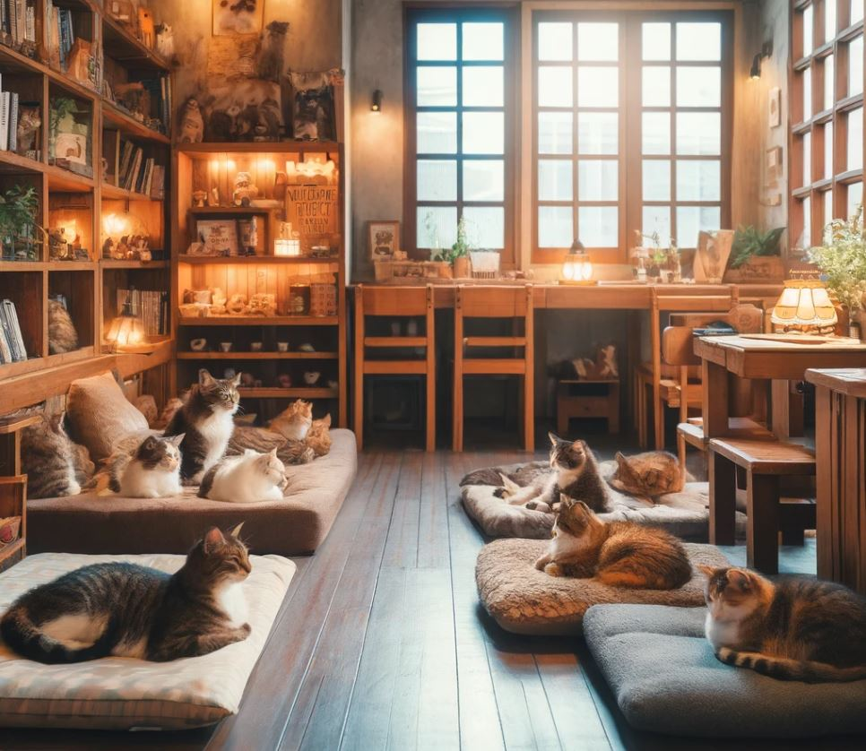
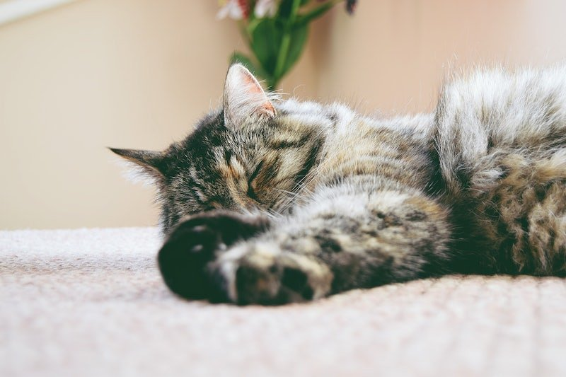
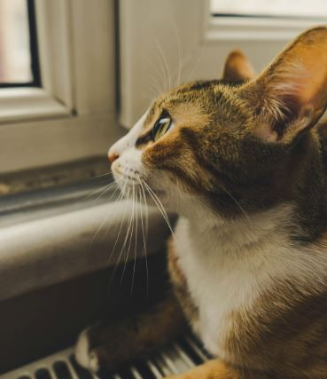

Support Our Cats
Discover how you can make a difference in the lives of our feline friends.
Why Support Cat & Caffe?
At Cat & Caffe, we provide a safe haven for rescue cats and help them find loving homes. Your support helps us care for these cats and keep our cafe running smoothly.
Meet the Cats
These are the cats currently looking for their forever homes. Learn about their personalities and find your new best friend.

Whiskers
Whiskers is a playful tabby who loves attention and playing with toys.

Snowball
Snowball is a gentle white cat who enjoys lounging and cuddling.

Shadow
Shadow is shy but sweet and warms up quickly once he feels safe.